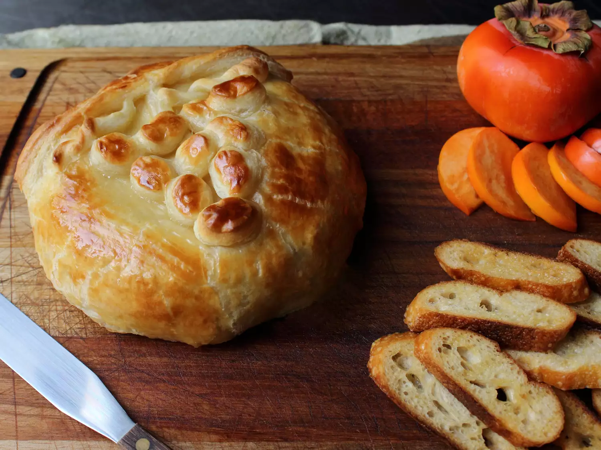

Baked Stuffed Brie with Cranberries & Walnuts

Descriptoin
This baked Brie with cranberries is beautiful. One of the most common mistakes people
make when serving cheese is not letting it come to room temperature firest so all the flavours cam be
fully realized.
This stuffed Brie takes that principle to the next level.
Ingredients
- 1 small wheel of Brie (about 6 to 8 inches), chilled
- ¼ cup dried cranberries
- ¼ cup chopped walnuts
- 1 sheet frozen puff pastry, thawed, plus extra for design
- 1 large egg
- 1 teaspoon water
Steps
- Use a sharp paring knife to score the side of the Brie all the way around, cutting directly through the rind. Cut the Brie in half.
- Lay Brie halves, cut side up, on a flat work surface. Spread cranberries over one half and walnuts in the other, pressing down gently into the cheese.
- Quickly put the 2 sides back together with cranberries on top of walnuts. Press together and stuff back in any berries or walnuts that fall out.
- Roll out puff pastry on a floured surface to about ⅛-inch thickness. Place the Brie in the center of the pastry.
- Gently pull up the edges to ensure there is enough dough to entirely wrap the Brie. Trim the corners off of there is too much dough.
- Mix together egg and water in a small bowl. Brush egg wash over the dough.
- Fold one edge of dough over the Brie and then the opposite side.
- Fold over the remaining edges to completely encase the Brie. Trim off excess dough as needed. Flip the Brie over so the seam is on the bottom.
- Gently press to snug dough agains the Brie. Brush the top and sides of the wrapped Brie with egg wash.
- Cut out decorative poeces from the remaining puff pastry and place on the Brie. Lightly brush the decorative poeces with egg wash.
- Place the Brie in the freezer for 1 hour.
- Preheat the oven to 425 degrees F (220 degrees C). Line a rimmed baking sheet with parchment paper.
- Place the Brie on the prepared baking sheet and bake on the center rack in the preheated oven until it is browned and leaking cheese, 20 to 25 minutes.